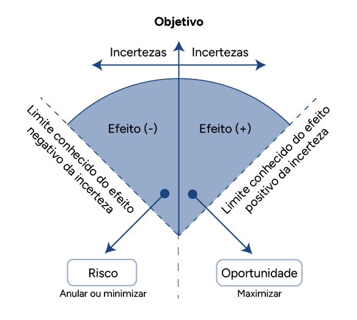

Determinação de riscos e oportunidades: definição de critérios, comparação, avaliação, tratamento, monitoramento e reavaliação
A gestão de riscos e oportunidades tem por propósito criar e proteger valor nas organizações, gerenciando riscos, explorando oportunidades, tomando decisões baseadas em informação, melhorando desempenho, encorajando a inovação e alcançando objetivos. Depois de conhecer os referenciais teóricos que fundamentam este tema, é chegado o momento de se entender como esses conhecimentos são aplicados na prática.
O conhecimento Gestão de riscos: princípios, conceitos e estrutura conforme ISO 9001 e ISO 31000 vigentes ensinou que o risco é o efeito da incerteza. Cotidianamente, as pessoas estão habituadas a lidarem com a incerteza em todas as situações. Tanto nas questões pessoais quanto nas profissionais, há sempre uma parcela de possibilidades incertas que podem afetar a capacidade de alcançar objetivos.
Portanto, empresas que buscam a excelência e/ou conformidade com as boas práticas de gestão precisam estar atentas a este assunto para que sua implementação e aplicação esteja centrada na proteção do valor institucional a partir de uma gestão eficiente dos riscos e das oportunidades a que estará sujeita.
Para acompanhar a aplicação prática da gestão de riscos e oportunidades durante este módulo, vamos conhecer o caso do estúdio de Pilates e treinamento funcional Corpo e Mente. Veremos ao longo do conteúdo desta unidade curricular como a abordagem para tratar riscos e oportunidades – tal como prescreve o item 6.1 da ISO 9001:2015 – é útil para qualquer modelo de negócio, independentemente do seu porte ou segmento de atuação.
Para começar, assista ao vídeo a seguir.
Clique ou toque para visualizar o conteúdo.
Determinando riscos e oportunidades
Não há como evitar, assumir riscos faz parte da condução dos negócios de qualquer empresa. Mas isso não significa que os riscos que a sua organização corre não possam ser previstos e avaliados antes de as decisões serem tomadas. O objetivo deste conteúdo é discutir cada uma das etapas da gestão de riscos e oportunidades segundo o modelo proposto pela ISO 31000:2018 e apresentar caminhos para que um técnico em qualidade se capacite a apoiar a implantação e execução de um processo de gestão de riscos e oportunidades na empresa em que atua.
Ainda que a ISO, o COSO e inúmeras entidades, governamentais, militares ou civis, tenham produzido farto material conceitual e metodológico para organizar uma abordagem baseada em riscos – estratégicos, operacionais ou de projeto –, cada empresa deve estabelecer um processo adequado ao seu porte, segmento de negócio e objetivos da qualidade. Este tema tem tanta relevância que a ISO 9001:2015, o principal referencial técnico para a gestão da qualidade, tem, em seu item 6.1, um requisito específico com as “ações para abordar riscos e oportunidades”.
Um conceito importante que é preciso reafirmar aqui para estabelecer uma padronização neste conteúdo são as definições de risco e oportunidade.
Algumas publicações falam em risco positivo e risco negativo, sendo os riscos negativos as ameaças e os riscos positivos as oportunidades.
Neste material, porém, riscos vão se referir aos efeitos negativos das incertezas e oportunidades serão os efeitos positivos das incertezas.
Fonte: Adaptado de Rosa e Toledo (2015)
Diagrama em formato de leque, composto por um arco de círculo dividido ao meio por uma seta vertical em duas seções principais, cada uma com um título e uma descrição. A seta vertical que divide a figura aponta para a palavra “objetivo”, que está centralizada no topo da figura. Abaixo, ao lado esquerdo, consta “incerteza”; abaixo, já dentro da área cinza do diagrama, está a palavra “efeito (-)” e ao lado de fora, à esquerda, “limite conhecido do efeito negativo da incerteza”, aparecendo uma seta para uma caixa em que consta “risco” e, abaixo dela, “anular ou minimizar”. Ao lado direito da seta vertical, em apresentação espelhada ao lado esquerdo, consta novamente a palavra “incerteza”; abaixo, já dentro da área cinza do diagrama, está a palavra “efeito (+)” e ao lado de fora, à direita, está “limite conhecido do efeito positivo da incerteza”, aparecendo uma seta para uma caixa em que consta “oportunidade” e, logo abaixo, a palavra “maximizar".
Assim, a palavra riscos representa os efeitos negativos das incertezas, que deverão ser minimizados por meio de ações de mitigação. Por outro lado, referir-se aos efeitos positivos das incertezas representa as oportunidades a serem maximizadas por meio de ações de alavancagem.
A gestão de riscos e oportunidades nas organizações
Ainda que a ISO 9001:2015 aborde o tema riscos e oportunidades como um requisito normativo, o escopo daquela abordagem está restrito ao âmbito do sistema de gestão da qualidade (SGQ). É por meio da ISO 31000:2018 que a gestão de riscos e oportunidades alcança um nível estratégico e um escopo bem mais amplo, não restrito ao SGQ, mas a todo o contexto organizacional.
Conforme define a ISO 31000:2018, a gestão de riscos é um conjunto de “atividades coordenadas para dirigir e controlar uma organização no que se refere a riscos”. A mesma publicação, como se sabe, define risco como o “efeito da incerteza”. Portanto, de uma maneira simplificada, mas correta, é possível dizer que gerenciar riscos e oportunidades é gerenciar as incertezas e seus efeitos nos objetivos da organização.
Um jargão empresarial que alerta da importância deste tema diz que “quem não gerencia risco, gerencia crise”. É claro que é muito mais prudente atuar preventivamente para evitar que crises se instalem do que ter que solucionar problemas gerados pela materialização de um risco que podia ter sido evitado. Sabe-se que, uma vez instalada a crise, ela afeta a racionalidade das decisões e a própria capacidade criativa das pessoas para agir resolutivamente. Por outro lado, como disse Philip Kotler (apud Ferreira, 2015), “uma coisa é perceber oportunidades atraentes e outra é ter competência para ser bem-sucedido nessas oportunidades”. Também fica evidente que de nada adianta identificar boas oportunidades se não houver a criação de condições para aproveitá-las no tempo certo.
Quando se está neste contexto, identificam-se riscos ou oportunidades que ainda não se materializaram, ou seja, está-se trabalhando no campo das hipóteses que podem vir ou não a se confirmar. É por essa razão o caráter preventivo da gestão de riscos e oportunidades que difere das análises de não conformidade ou dos métodos de análise de problemas – como MASP (método de análise e solução de problemas) e PDCA (plan, do, check, act), por exemplo –, que procuram soluções para riscos que se materializaram.
Processo de gestão de riscos e oportunidades
A ISO 31000:2018 lembra que “o processo de gestão de riscos envolve a aplicação sistemática de políticas, procedimentos e práticas para as atividades de comunicação e consulta, estabelecimento do contexto e avaliação, tratamento, monitoramento, análise crítica, registro e relato de riscos” (ABNT, 2018). Com isso fica claro que, não apenas na visão da ISO, mas em qualquer outra metodologia ou modelo tomado como referência no mercado, a gestão de riscos deve seguir uma linha de raciocínio lógica e coerente em seu desdobramento de forma a permitir um aprofundamento necessário e suficiente para que todos os riscos sejam identificados, analisados, avaliados e tratados. Ainda que seja impossível identificar realmente todos os riscos de um projeto, processo ou negócio, e, se identificados, fazer a análise e avaliação perfeitas para desenvolver estratégias de resposta eficazes, o profissional da qualidade deve estar preparado para discernir quando o trabalho alcançou um nível suficiente para trazer uma proteção razoável do valor institucional.
Fonte: Adaptado de ABNT (2018)
Modelo de gestão de riscos da ISO 31000:2018, constituído por um círculo em cinza-escuro e, circunscrito a este círculo, outras formas geométricas de forma a arranjar uma estrutura composta por todas as etapas do processo de gestão de riscos: em um retângulo vertical à esquerda a inscrição “comunicação e consulta”, ao lado direito, outro retângulo vertical com a inscrição “monitoramento e análise crítica”. Há um retângulo inferior com a inscrição “registro e relato”. Ao centro há três retângulos empilhados, sendo o primeiro, no topo, com a inscrição “escopo, contexto, critério”, um retângulo central representando o “processo de avaliação de riscos” com três retângulos em formato de seta apontando para baixo dando um sentido de fluxo com as inscrições “identificação de riscos”, “análise de riscos” e “avaliação de riscos”, respectivamente. Por fim, um retângulo inferior com a inscrição “Tratamento de riscos”.
A norma prossegue em seu texto com orientações para que a gestão de riscos seja tratada não como uma prática isolada ou restrita a algumas áreas ou processos, mas como uma questão da própria governança corporativa: “Convém que o processo de gestão de riscos seja parte integrante da gestão e da tomada de decisão, e seja integrado na estrutura, operações e processos da organização. Pode ser aplicado nos níveis estratégico, operacional, de programas ou de projetos” (ABNT, 2018, p. 9).
Que tal explorar o modelo apresentado na figura e utilizá-lo como estrutura para compreender cada etapa da gestão de riscos e oportunidades, seus critérios e seu propósito na construção de um modelo robusto de suporte à gestão das empresas?
Revisite o caso do Estúdio Corpo e Mente para analisar a aplicação prática deste modelo.
A proprietária Andreia, que tem formação e especialização nas áreas de educação física e saúde, está sempre buscando conhecimento para profissionalizar a gestão do seu empreendimento. Recentemente ela assistiu a uma palestra sobre a importância da gestão de riscos e oportunidades para os negócios e resolveu buscar mais informações. Lúcia, sua sócia, estava um pouco cética com relação à utilidade do assunto em um negócio pequeno como o delas, mas lembrou que, desde que Andreia começou a implementar técnicas da qualidade, os resultados melhoraram, então resolveu confiar e apoiar a iniciativa da amiga.
Comunicação e consulta
A comunicação promove o engajamento das partes interessadas nas atividades e demandas da gestão de riscos e oportunidades. Um bom plano de comunicação é necessário não apenas para criar uma cultura voltada para esse tema, mas também para manter as pessoas envolvidas e criando um ambiente para a melhoria contínua desse processo. Canais de comunicação bem estabelecidos proporcionam que as informações sobre riscos e oportunidades sejam partilhadas e que suas possíveis consequências – positivas ou negativas – façam parte do processo de tomada de decisão em todos os níveis.
Para tanto, a ISO 31000:2018 afirma que comunicação e consulta têm como objetivos os seguintes (ABNT, 2018, p. 10):
— Reunir diferentes áreas de especialização para cada etapa do processo de gestão de riscos;
— Assegurar que pontos de vista diferentes sejam considerados apropriadamente ao se definirem critérios de risco e ao se avaliarem riscos;
— Fornecer informações suficientes para facilitar a supervisão dos riscos e a tomada de decisão;
— Construir um senso de inclusão e propriedade entre os afetados pelo risco.
Observe que esses objetivos estão ligados à construção de uma cultura voltada para a gestão de riscos e oportunidades no âmbito da empresa, mas que alcança também todas as partes interessadas.
Escopo, contexto e critério
Dado seu caráter abrangente – as incertezas estão presentes em todos os aspectos da vida humana –, a gestão de riscos e oportunidades tem um alcance muito amplo. No âmbito dos negócios, essa estratégia de gestão pode, ainda, ser aplicada em diferentes níveis – estratégico, operacional, de projetos ou de negócio. Portanto, é conveniente que a organização defina o escopo de suas atividades de uma maneira clara, com foco nos objetivos a serem alcançados em cada um desses níveis.
Novamente recorrendo ao texto da ISO 31000:2018, encontra-se que, quando se planeja a abordagem, as considerações contemplam (ABNT, 2018, p. 10-11):
— Objetivos e decisões que precisam ser tomadas;
— Resultados esperados das etapas a serem realizadas no processo;
— Tempo, localização, inclusões e exclusões específicas;
— Ferramentas e técnicas apropriadas para o processo de avaliação de riscos;
— Recursos requeridos, responsabilidades e registros a serem mantidos;
— Relacionamentos com outros projetos, processos e atividades.
Outro aspecto importante nesta etapa é a compreensão dos contextos interno e externo, que devem ser considerados. A execução desta análise crítica é fundamental, pois influenciará a capacidade que a empresa terá no alcance dos seus objetivos. Isso envolve fazer um mapeamento dos aspectos gerais e específicos para o estabelecimento de um cenário que representará o ambiente de risco em que a empresa opera.
Essa atividade pode necessitar pesquisas a fontes externas – informações e relatórios – e a consulta a especialistas.
Por fim, nesta fase, é igualmente importante estabelecer os critérios que governarão o processo de gestão de riscos e oportunidades. Para isso, é conveniente que a empresa, por meio da alta gestão, defina e comunique quais riscos ela está disposta a correr para perseguir seus objetivos. Esse posicionamento é reflexo do perfil da empresa – se mais arrojado ou mais conservador – e é traduzido pelo que se chama de apetite ao risco, ou seja, “quantidade e tipo de riscos que uma organização está preparada para buscar, reter ou assumir”, como define a ISO 31073 (ABNT, 2022). A definição de um critério objetivo para o apetite ao risco orienta qual atitude perante o risco a empresa adotará em sua estratégia.
Os critérios de risco são, também segundo o vocabulário de riscos da ISO 31073, “termos de referência contra os quais a significância de um risco é avaliada” (ABNT, 2022). Esse conceito e sua aplicação serão abordados posteriormente, na etapa “análise dos riscos e das oportunidades”.
Andreia estava animada com o que vinha aprendendo. Ficou surpresa ao descobrir que existiam guias de boas práticas que traziam toda a fundamentação que ela precisava. Estudou a ISO 31000 com dedicação e decidiu que seria o modelo adequado para o estúdio. Reuniu os funcionários e compartilhou com entusiasmo o trabalho que seria desenvolvido nos próximos meses, explicando os principais conceitos e objetivos dessa iniciativa. Concluiu dizendo que contava com todos para que os principais riscos e oportunidades fossem identificados, analisados, avaliados e tratados.
Identificação de riscos e oportunidades
A identificação de riscos tem como propósito principal trazer um olhar atento para todo o contexto interno e externo de uma organização, a fim de “encontrar, reconhecer e descrever riscos” (ABNT, 2018, p. 12) e oportunidades que possam, em alguma medida, afetar a capacidade dessa organização em realizar sua estratégia ou obter os resultados esperados de seus projetos, processos ou negócios.
É nessa etapa da gestão de riscos que são exploradas todas as variáveis que possam criar este ambiente de incerteza com relação ao alcance dos objetivos organizacionais (novamente, sejam estes objetivos estratégicos, sejam de projeto, de processo ou de negócio). Uma identificação de riscos eficiente é fundamental para o sucesso da gestão, pois é a partir do resultado dessa etapa que todas as ações para neutralizar ameaças e alavancar oportunidades serão tomadas.
A identificação dos riscos e das oportunidades inclui também a identificação das suas fontes e causas. Estas causas, também conhecidas como fatores de risco, são hipóteses que, caso ocorram, provocam a materialização do risco ou da oportunidade.
Fonte: Senac EAD (2024)
Fluxo simples com três caixas, uma ao lado da outra, conectadas por setas. A caixa à esquerda traz, em seu interior, o texto “causa incerta (fator de risco)” com uma flecha dirigida para a próxima caixa, com o texto “evento (risco)” e outra seta dirigida para a terceira caixa, em que está escrito “efeito (consequência)”.
É necessário, então, que os profissionais que atuam na gestão de riscos sejam experientes e dominem técnicas exploratórias para que o maior número de riscos e oportunidades possa ser capturado nesta fase.
Confira agora algumas dessas técnicas mais utilizadas como suporte à identificação de riscos:
Brainstorming
É uma das ferramentas mais comuns para a geração de ideias e recomendada em diversas ações da qualidade ou da gestão. Essa recomendação se justifica por ter o brainstorming o princípio da colaboração e o entendimento de que a diversidade de pensamentos e de experiência amplia a visão sobre qualquer assunto e aumenta a probabilidade de abordagens criativas e com menos vieses ou paradigmas.
O brainstorming é, em sua tradução literal, uma “tempestade de ideias”, que consiste em reunir um grupo de pessoas com diferentes experiências e estimulá-las a compartilhar suas ideias em torno de uma questão colocada. Essa técnica já foi apresentada em outros momentos neste curso, portanto, não serão repetidos aqui os conceitos que já foram estudados em outra unidade curricular, mas a técnica será trazida novamente ao contexto da gestão com o objetivo de aplicá-la na identificação dos riscos e das oportunidades.
Para que o brainstorming seja bem executado, convém que se observem os seguintes pontos:
- Formação do time: escolher criteriosamente quem participará da técnica. Assim como é sempre bom incluir pessoas que não tenham qualquer relação com o assunto a ser analisado – para aumentar as chances de ideias não convencionais –, também é essencial ter especialistas no assunto que será avaliado para que a experiência e as lições aprendidas sejam compartilhadas com o grupo.
- Entendimento do contexto: apresentar ao time o escopo do trabalho e fornecer informações que permitam uma maior imersão no assunto. A ISO 31000:2018 destaca em seu texto que “informações pertinentes, apropriadas e atualizadas são importantes na identificação de riscos” (ABNT, 2018, p. 12). Observe alguns exemplos:
- Para riscos estratégicos: fornecer a matriz SWOT (strengths, weaknesses, opportunities, threats), relatórios de entidades externas sobre tendências globais, locais ou de nicho, estudos de futuro (foresight), entre outros
- Para riscos operacionais: utilizar as informações do processo como SIPOC (suppliers, inputs, process, outputs e customers), fluxogramas, procedimentos etc.
- Para riscos em projetos: conhecer as premissas, as restrições e as entregas esperadas do projeto, utilizar uma estrutura analítica de riscos (EAR) como guia, utilizar lições aprendidas de outros projetos etc.
- Geração de ideias: estimular os participantes a expressarem livremente todos os riscos que lhes vem à mente a partir do entendimento do contexto. Como em qualquer outra sessão de brainstorming, todos os riscos são anotados, sem julgamento prévio, para que não cause uma ruptura no ciclo de criatividade do time.
- Análise e compilação do resultado: avaliar quais riscos e oportunidades resultantes da tempestade de ideias devem ser considerados para as etapas seguintes do processo.
Fonte: Adaptado de Guia PMBOK (2017)
Esquema tipo organograma com uma caixa central, no topo, denominada "riscos do projeto" e quatro ramos que se estendem a partir dele, cada um representando um tipo diferente de risco: "externos", "técnicos", "organizacional" e "gerenciamento”. Da esquerda para a direita, de cima para baixo, abaixo da caixa “externos”, ligam-se quatro caixas com as inscrições “fornecedores”, “condições climáticas”, “clientes” e “mercado”. A ramificação “técnicos” também contém sub-ramos de “complexidade”, “desempenho” e “tecnologia”. O ramo "organizacional" inclui os sub-ramos "recursos materiais", "processos internos" e “logística”. O ramo “gerenciamento” contém os sub-ramos “estimativas”, “controle”, “comunicação” e “equipe”.
- SWOT é um acrônimo do inglês que significa strengths (forças), weaknesses (fraquezas), opportunities (oportunidades) e threats (ameaças). É uma ferramenta de gestão que possibilita identificar os cenários interno e externo dos negócios.
- Foresight estratégico é a predição de cenários de riscos e oportunidades a partir da projeção de futuros possíveis obtidos por técnicas estatísticas ou extrapolações.
- SIPOC é uma ferramenta que resume as entradas e saídas de um ou mais processos em forma de tabela. A sigla SIPOC significa suppliers (fornecedores), inputs (entradas ou insumos), process (o processo em si), outputs (saídas ou entregas) e customers (clientes), que formam as colunas da tabela em que cada uma das categorias são descritas para dar uma visão ampla do processo.
- Estrutura analítica de riscos (EAR) é uma ferramenta da gestão de projetos pela qual você agrupa riscos e organiza-os em categorias.
Delphi
É uma técnica semelhante ao brainstorming, porém os participantes não se reúnem para a geração de ideias: eles são convidados a contribuir individualmente na identificação de riscos a partir da sua expertise individual, sem a interação com outras pessoas. Isso garante a independência nas opiniões sem a influência da opinião de outros participantes. É recomendável que os membros não tenham acesso sequer ao nome dos colegas para que sua participação fique realmente isenta de qualquer conflito de opinião. Nessa técnica, o gestor de riscos atua como mediador e vai conduzindo as análises de modo a chegar a um resultado técnico e objetivo mesmo para assuntos de maior complexidade.
Ainda que compartilhe de algumas premissas similares, esse método traz algumas diferenças importantes em relação ao brainstorming tradicional:
Clique ou toque para visualizar o conteúdo.
Convidar especialistas no assunto com reconhecidas experiência e credibilidade. Esses especialistas devem estar comprometidos com a participação nas rodadas de geração de ideias e é preciso garantir que não haja interação entre eles.
Apresentar o caso em análise para cada um dos especialistas da mesma forma para que todas as opiniões sejam emitidas a partir do mesmo cenário. Essa apresentação pode ser em forma de estudo de caso ou de questionário.
Coletar as opiniões dos especialistas a partir de suas livres respostas. A tendência é que riscos bem específicos sejam identificados e que já sejam apresentados tecnicamente.
Coletar as respostas e fornecer um resumo dos resultados aos participantes, incluindo concordâncias e divergências, para que estes revisem suas respostas e forneçam quaisquer comentários ou justificativas que ajudem a refinar as percepções originais. Este processo deve ser repetido até que se chegue a um consenso ou a um nível satisfatório de convergência. Quando aplicado na identificação de riscos e oportunidades, não há necessidade de realizar muitas rodadas de convergência, pois ao gestor pode interessar considerar todas as hipóteses levantadas pelos especialistas.
Formação do time
Convidar especialistas no assunto com reconhecidas experiência e credibilidade. Esses especialistas devem estar comprometidos com a participação nas rodadas de geração de ideias e é preciso garantir que não haja interação entre eles.
Entendimento do contexto
Apresentar o caso em análise para cada um dos especialistas da mesma forma para que todas as opiniões sejam emitidas a partir do mesmo cenário. Essa apresentação pode ser em forma de estudo de caso ou de questionário.
Geração de ideias
Coletar as opiniões dos especialistas a partir de suas livres respostas. A tendência é que riscos bem específicos sejam identificados e que já sejam apresentados tecnicamente.
Análise e compilação dos resultados
Coletar as respostas e fornecer um resumo dos resultados aos participantes, incluindo concordâncias e divergências, para que estes revisem suas respostas e forneçam quaisquer comentários ou justificativas que ajudem a refinar as percepções originais. Este processo deve ser repetido até que se chegue a um consenso ou a um nível satisfatório de convergência. Quando aplicado na identificação de riscos e oportunidades, não há necessidade de realizar muitas rodadas de convergência, pois ao gestor pode interessar considerar todas as hipóteses levantadas pelos especialistas.
Métodos baseados em evidências
Significa identificar riscos e oportunidades a partir de dados históricos de casos que tenham certo grau de similaridade com o processo, projeto ou negócio que está sendo analisado no momento e de onde se podem retirar exemplos de lições aprendidas do(s) caso(s) que serão utilizados como paradigma. Essa abordagem é muito comum, pois representa a própria gestão do conhecimento. As ditas organizações que aprendem devem ter a capacidade de utilizar sua própria experiência para gerar informações ou soluções de forma mais rápida e completa.
Essa técnica, porém, não pode representar uma limitação na hora da identificação dos riscos e das oportunidades, ou seja, simplesmente replicar riscos e oportunidades de casos semelhantes não garante uma abordagem eficiente para o caso atual ou futuro. Ainda que sejam uma fonte fundamental de consulta, experiências passadas não podem ser a única fonte explorada. O ideal é utilizar essa matéria como ponto de partida, mas ampliar o olhar – utilizando outras técnicas em paralelo, por exemplo – a fim de garantir um resultado mais abrangente e completo.
Dicionários de risco
A gestão de riscos vem se desenvolvendo muito nos últimos anos. Com o avanço das exigências normativas e de mercado por uma governança mais eficiente, muitas empresas criam seus dicionários de risco a partir de bancos de dados internos e externos, organizados em categorias e subcategorias, que são utilizados como guia para a identificação de riscos e oportunidades específicos aos casos em estudo.

Fonte: Adaptado de Kallás (2017)
Tabela denominada “dicionário de riscos” composta de 16 linhas com retângulos de cores e tamanhos variados com os seguintes textos inscritos em cada um desses retângulos:
As primeiras 4 linhas com 7 colunas estão sob título “externo”. A primeira coluna é a da “gestão e modelo de negócios” e abaixo dela estão as linhas “concorrência e mercado”, “continuidade dos negócios” e “reputação e imagem”. A segunda coluna é “financeiro”, e sob ela estão as linhas “inadimplência” e “taxa de juros”. A terceira coluna é “político econômico” e sob ela estão as linhas “cenário econômico” e “política pública”. A quarta linha é “suprimentos” e sob ela está “fornecedores”. A quinta coluna é “Regulatório” e sob ela está “legal”. A sexta coluna é “informação e tecnologia” e sob ela está “dependência de TI”. A sétima coluna é “alianças” e sob ela está “terceirização e parceria”.
A sexta linha é o título “Interno”. Abaixo dele dividem-se três colunas sob o subtítulo “governança”, duas sob o subtítulo “regulamentar” e duas sob o subtítulo “financeiro”.
Em governança estão três colunas com duas linhas cada: na primeira estão as linhas “comunicação e divulgação” e “conduta antiética/fraude”; na segunda coluna estão: “estrutura organizacional” e “indicadores de performance e risco”; na terceira coluna estão “responsabilidade social” e “sucessão”.
Abaixo de “regulamentar” há duas colunas, sendo a primeira com três linhas: “ambiental”, “contábil e financeira” e “aderência às regras”; e a segunda com duas linhas: “trabalhistas” e “tributos”.
Abaixo de financeiro estão duas colunas, com duas linhas cada. A primeira coluna contém “custo de oportunidade” e “disponibilidade de capital” e a segunda coluna contém “fluxo de caixa” e “garantia”.
Continuando a tabela, novamente da esquerda para a direita, abaixo do conteúdo de “governança” está o subtítulo “operacional”, que tem 3 colunas com 4 linhas cada. Na primeira coluna, as linhas são: “capacidade operacional”, “desenvolvimento de produtos e serviços”, “efetividade e eficiência” e “planejamento e orçamento”. Na segunda coluna, as linhas são “gestão do conhecimento”, “licitações”, “obrigação contratual” e “marcas e patentes”. Na quarta coluna estão as linhas: “perda e obsolescência”, “projetos”, “segurança patrimonial” e “saúde e segurança”. Abaixo do conteúdo de “regulamentar” está o subtítulo “informação e tecnologia”, com duas colunas. A primeira coluna tem duas linhas: “acesso/confidencialidade” e “inovação tecnológica”; e a segunda coluna só contém a linha “integridade e credibilidade”. Abaixo de “financeiro” está o subtítulo “recursos humanos”, com 2 colunas. A primeira contém 3 linhas: “capacitação/treinamento”, “competência/atitude” e “dependência pessoal”; a segunda contém 2 linhas: “limite de autoridade” e “retenção de talentos”.
Abaixo do conteúdo de “informação e tecnologia” está o subtítulo “relatórios”, com duas linhas e uma linha em cada: “regulamentação” e “relatórios financeiros”.
Abaixo do conteúdo de “operacional” está o subtítulo atendimento ao cliente, com 3 colunas: “distribuição”, “falha de produto/serviço” e “satisfação do cliente”.
Esse conteúdo é um exemplo de dicionário de riscos. É comum que cada empresa construa o seu de acordo com as características do seu negócio. Ter um dicionário ajuda as equipes a explorarem melhor os riscos e as oportunidades.
A EAR, mencionada como uma das ferramentas aplicáveis à gestão de riscos em projeto, é outro exemplo desses dicionários.
Ferramentas de análise de causa
Como já se sabe, uma completa descrição de um risco ou uma oportunidade é composta de sua relação de causa e efeito. As causas são os fatores – internos ou externos – que levam à materialização do risco ou da oportunidade em questão e o surgimento de seus efeitos.
Várias são as ferramentas da qualidade que apoiam à identificação de causas a partir de seus possíveis efeitos e que são muito úteis para a correta descrição dos riscos ou das oportunidades. Em certa medida, a sua aplicação assemelha-se à utilizada na análise de falhas – como no MASP, por exemplo. A diferença é que, quando se está analisando falhas, procura-se a causa de um problema que já ocorreu, e quando se utilizam essas mesmas ferramentas para a análise de riscos ou oportunidades, está-se atuando preventivamente e buscando hipóteses para fatores que podem levar à materialização desse risco ou dessa oportunidade. Confira, então, algumas dessas ferramentas aplicadas em um contexto de risco (preventivo):
5 porquês
É uma ferramenta útil para qualificar o brainstorming, levando à identificação dos fatores (causas) associados a cada evento de risco listado. Por exemplo:
- Processo → entrega de encomendas
- Evento de risco → atraso na entrega
- Consequência → insatisfação dos clientes
- Fator(es) de risco → falta processo para determinação das rotas
Fonte: Senac EAD (2024)
Esquema tipo fluxo com cinco setas verticais com as inscrições “o quê?”, “por quê?”, “por quê?”, “por quê?” e “por quê?”. Ao lado de cada seta, um retângulo com a inscrição “Atraso na entrega”, “Quantidade de entregas por caminhão”, “Rotas mal planejadas”, “Falta análise técnica para determinação das rotas” e “Não há um processo definido para estabelecimento das rotas”.
Essa técnica torna-se limitada na medida em que permite a identificação de uma única causa/fator a cada rodada.
Árvore de falhas
É mais vantajosa em relação aos 5 porquês, pois permite explorar mais hipóteses em uma mesma rodada de análise. Por exemplo:
- Processo → entrega de encomendas
- Evento de risco → atraso na entrega
- Consequência → insatisfação dos clientes
- Fator(es) de risco
- Falta processo para determinação das rotas
- Há pouco intervalo entre as entregas
- Faltam recursos técnicos para definição de rotas
- Falta plano de manutenção preventiva
- Faltam recursos na área de manutenção
- Há poucos veículos na frota
- Tipo de caminhão inadequado para o volume de entregas
- Falha na transferência dos dados do telefone para o sistema
Fonte: Senac EAD (2024)
Modelo esquemático de árvore de falhas com um retângulo acima de todos com a inscrição “Atrasos nas entregas”. No ramo da esquerda, em uma segunda linha, há uma caixa com as inscrições “Quantidade de entregas por caminhão”; a seguir, no próximo nível, uma caixa à esquerda com a inscrição “Rotas mal planejadas”, uma outra caixa centralizada com a inscrição “Frota insuficiente” e uma elipse com a inscrição “Tipo de caminhão inadequado para o volume de entregas”, todas conectadas à caixa “Quantidade de entregas por caminhão”. Conectadas à caixa “Rotas mal planejadas” está um ramo composto por uma caixa com a inscrição “Falta análise técnica no planejamento das rotas” e três elipses, com as inscrições “Falta processo definido para definição das rotas”, “Pouco intervalo entre as entregas” e “Faltam recursos técnicos para definição de rotas”. No outro ramo, conectado à caixa “Frota insuficiente”, estão uma caixa com a inscrição “Elevado tempo de manutenção de veículos” e três elipses, “Poucos veículos na frota”, “Falta plano de manutenção preventiva” e “Faltam recursos na área de manutenção”. À direita, em um ramo conectado à caixa “Atrasos nas entregas”, estão duas caixas com as inscrições “Endereço errado” e “Falha no cadastro do cliente” e uma elipse com a inscrição “Falha na transferência dos dados do telefone para o sistema”, alinhadas verticalmente nesta ordem.
Análise de bow tie
É, talvez, a ferramenta mais apropriada para a descrição de riscos, pois permite a construção de uma linha de correspondência entre causa (fator) – evento – efeito (consequência). Além disso, permite a identificação dos controles.
- Processo → entrega de encomendas
- Evento de risco → atraso na entrega
- Consequência(s)
- Perdas financeiras
- Insatisfação dos colaboradores
- Insatisfação dos clientes
- Cancelamentos
- Fator(es) de risco
- Má determinação das rotas
- Não cumprimento das rotas
- Falta de manutenção preventiva
Fonte: Senac EAD (2024)
Modelo esquemático da análise de bow tie com um círculo centralizado na figura com a inscrição “Atraso nas entregas”. À esquerda, com texto em orientação vertical, a palavra “Causas” e cinco caixas retangulares com as inscrições “Má definição das rotas”, “Descumprimento das rotas”, “Consulta previsão tempo”, “Alagamento das ruas” e “Problemas mecânicos”. Uma linha conecta a caixa “Má definição das rotas” ao círculo central e sobre essa linha há três caixas retangulares alinhadas em série com as seguintes inscrições: “Mapas de entrega”, “Tabela de horários” e “Rotas padronizadas”. Outra linha conecta a caixa “Descumprimento das rotas” ao círculo central e uma terceira linha conecta à caixa “Problemas mecânicos” ao círculo central e sobre essa linha há duas caixas retangulares alinhadas em série com as inscrições: “Manutenção preventiva” e “Inspeção diária”. Ao lado direito da figura, uma representação espelhada traz a palavra “Consequências” em orientação vertical e quatro caixas horizontais em alinhamento vertical, com as inscrições “Perdas financeiras”, “Colaborador insatisfeito”, “Cliente insatisfeito” e “Cancelamentos”. Cada uma dessas caixas se liga ao círculo central por uma linha e sobre estas linhas há caixas horizontais. Sobre a linha que une “Cliente insatisfeito” ao centro há duas destas caixas com as inscrições: “Oferecer desconto” e “Contratar motoboy” e sobre a linha que une “Cancelamento” ao centro há uma caixa horizontal com a inscrição “Contratar motoboy”. Fora do diagrama, na parte inferior, há a inscrição “Controles preventivos” ao lado esquerdo e “Controles de recuperação” ao lado direito.
Há uma infinidade de outras técnicas úteis para identificação de riscos e de seus fatores. Você deve escolher a mais apropriada para sua empresa de acordo com a natureza do negócio, os objetivos da gestão de riscos e o grau de domínio que a sua organização tem sobre as técnicas disponíveis. A ISO 31010 é uma publicação da família da ISO 31000, que apresenta uma gama de técnicas e ferramentas que podem ser exploradas pelo profissional da gestão de riscos conforme sua necessidade.
Uma vez identificados esses riscos, cumpre fazer uma descrição clara de cada um deles, incluindo seus fatores (causas) e efeitos (consequências).
Sejam quais forem a técnica e a ferramenta de suporte escolhidas, a conclusão desta fase será uma lista de riscos a serem trabalhados nas etapas seguintes.
Vamos retornar ao estúdio de Pilates e treinamento funcional para observar como a proprietária e sua equipe progrediram na identificação de riscos.
Depois de analisar o contexto, Andreia optou por fazer uma coleta de riscos por meio da técnica do brainstorming. Para tanto, reuniu Lúcia, sua sócia, alguns colaboradores e alunos para uma rodada de geração de ideias com a finalidade de identificar riscos e oportunidades no serviço prestado aos alunos – foi esse o escopo escolhido para o primeiro ciclo.
Depois de analisado e compilado o resultado, os principais riscos e oportunidades foram os seguintes:
Riscos
- Falta de capacidade de atender à demanda
- Número reduzido de alunos
- Desequilíbrio financeiro
Oportunidades
- Faixa da população de terceira idade desatendida
- Alto fluxo de pessoas o ano todo
- Oferta abundante de profissionais
Ao elaborar essa lista, Lúcia e Andreia começaram a perceber que haviam encontrado um caminho para – a partir de uma visão ampliada do negócio – direcionar o foco de suas iniciativas para melhorar os resultados do estúdio.
Lúcia quis saber qual seria o próximo passo. Andreia, então, explicou que, ainda em grupo, aplicariam uma outra ferramenta para melhorar a descrição do risco e que isso incluía identificar os fatores que podem influenciar sua materialização.
Para esta etapa, optou pela utilização do bow tie e, a partir do resultado, preencheu a matriz de riscos e oportunidades que ela havia preparado a partir das dicas da palestra que assistiu.